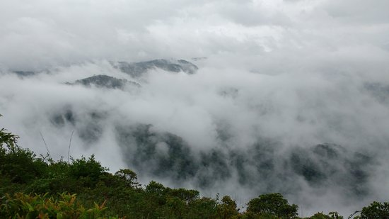

Wayanad adorns the northern tip of Kerala and is among the few areas in the world that have managed to conserve their natural charm and beauty. Teeming with rare flora and fauna, it is considered among the most picturesque locations in Kerala. It is host to a large variety of endemic species. One is surrounded by mist-covered peaks and lush greenery on all sides.
fascinating Destinations

Edakkal Caves

Chembra Peak
Banasura Hill
